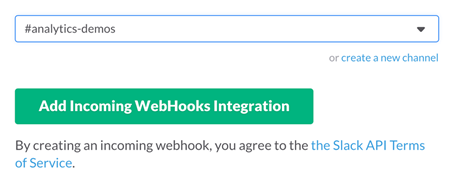
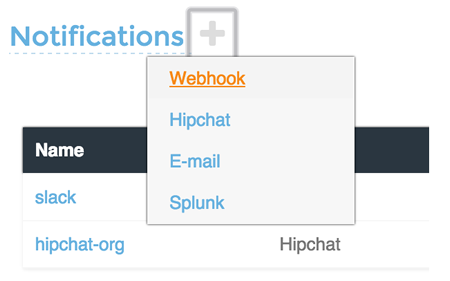
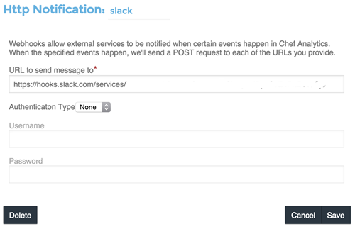
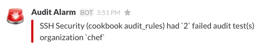
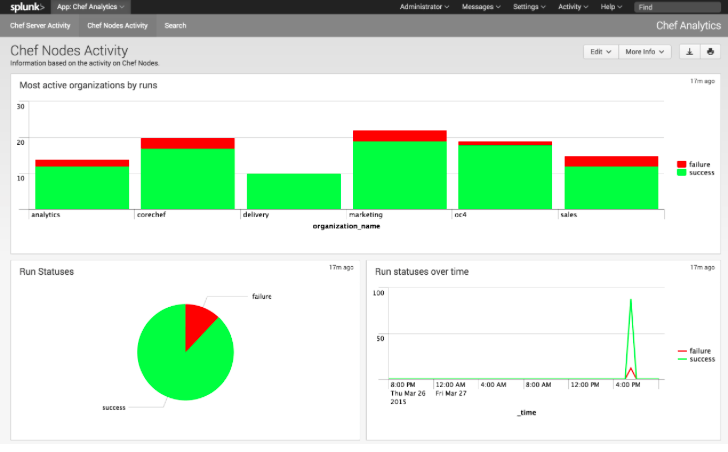
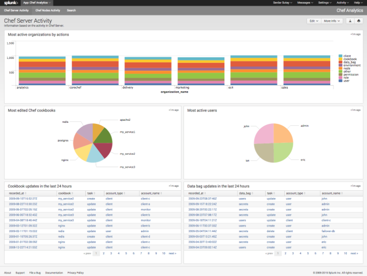
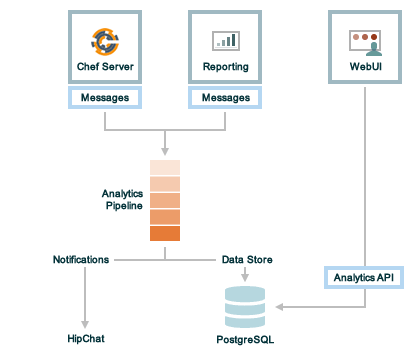
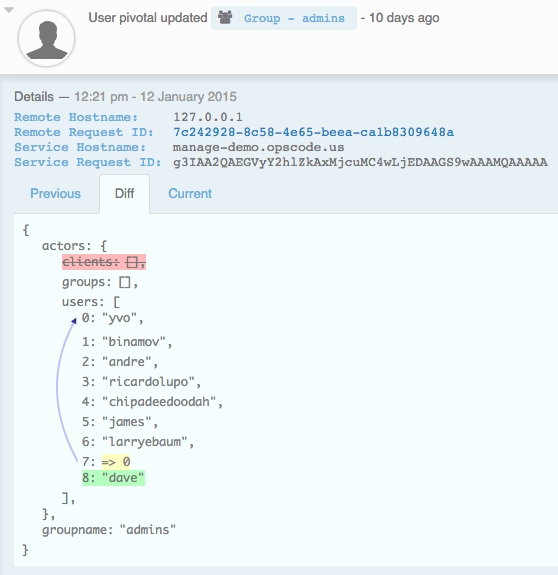

Release Notes: Chef Analytics¶
Note
This topic is meant to support existing customers using Analytics. The visibility capabilities of Chef Automate replace the features and functionality of Chef Analytics and we encourage customers to adopt Chef Automate going forward.
The Chef Analytics platform is a feature of Chef that provides real-time visibility into what is happening on the Chef server, including what’s changing, who made those changes, and when they occurred. Individuals may be notified of these changes in real-time. Use this visibility to verify compliance against internal controls.
What’s New (1.4)¶
The following items are new for Chef Analytics 1.4 and/or are changes from previous versions:
- Chef MLSA Starting with Chef Analytics 1.4.0, the Chef MLSA must be accepted when reconfiguring the product. If the Chef MLSA has not already been accepted, the reconfigure process will prompt for a yes to accept it. Or run opscode-analytics-ctl reconfigure --accept-license to automatically accept the license.
What’s New (1.3)¶
The following items are new for Chef Analytics 1.3 and/or are changes from previous versions. The short version:
- Bug Fix Ability to scroll through the dropdown of organizations when they are longer than the page.
- Database Partitioning and Management Databse partitioning was added for easier management. This has consequences for upgrading so read below.
Database Partitioning and Management¶
We’ve made it easier to manage your data by utilizing pg_partman supported partitioning in the database. It is enabled by default as of 1.3.0.
Note
There are additional upgrade steps and concerns for the 1.3.0 upgrade. Please see the notes below for a short summary and be sure to follow the 1.3.0 upgrade instructions when upgrading.
The largest table, activities, will allow partitions. The benefit of using partitions is that when old data is dropped the disk space is easily reclaimed.
By default, partitions will be enabled and the data retention timeline for activities is set to a year. These values are configurable via opscode-analytics.rb.
Important Notes Before You Upgrade¶
It is recommended that you use paritions but if you do not wish to do so, you must disable them before running reconfigure during your upgrade process (otherwise you cannot revert paritions without data loss). To disable paritions, add the following to your opscode-analytics.rb:
features['partitioning'] = false
Additionally, you will lose the ability to purge node data post upgrade. Node data is no longer being saved as of 1.2.0, but there might be older data in need of downsizing.
If you have disk space concerns, please run this command before reconfiguring to 1.3.0:
$ opscode-analytics-ctl purge-nodes
Be sure to follow the 1.3.0 upgrade instructions when upgrading.
What’s New (1.2)¶
The following items are new for Chef Analytics 1.2 and/or are changes from previous versions. The short version:
- Nodes view The new Nodes view allows you to filter nodes by status: all nodes, nodes that failed to converge, nodes that are missing, and nodes that converged successfully.
- RabbitMQ queue tuning New settings in the Chef server version 12.3 configuration file that support the management of RabbitMQ queues to allow the size and behavior of the queue needed by Chef Analytics to be configured, including settings for the queue length monitor and for tuning the rabbitmq-management plugin.
- Purge node information Chef Analytics stores Ohai data for every chef-client run. Use the purge-nodes command in opscode-analytics-ctl to manage this volume of data.
Nodes View¶
The Nodes view allows filtering of nodes by status:
- All nodes
- Nodes that failed to converge
- Nodes that are missing
- Nodes that converged successfully
{kind=link}
RabbitMQ Queues¶
Warning
Tuning the RabbitMQ queue settings requires Chef server, version 12.3. These settings must be configured in the chef-server.rb file.
If the RabbitMQ queue that is used by Chef Analytics stops consuming messages, the Chef server data partition will fill up and may affect the overall performance of the Chef server application itself. The settings for the RabbitMQ queue are tunable, including for queue length monitoring, queue capacity, maximum number of messages that can be in the queue before messages are dropped, the point at which messages are dropped, for settings used by the rabbitmq-management plugin, and so on.
The following settings may be used for tuning RabbitMQ queues used by Chef Analytics and the Chef server:
- rabbitmq['analytics_max_length']
- The maximum number of messages that can be queued before RabbitMQ automatically drops messages from the front of the queue to make room for new messages. Default value: 10000.
- rabbitmq['drop_on_full_capacity']
- Specify if messages will stop being sent to the RabbitMQ queue when it is at capacity. Default value: true.
- rabbitmq['management_enabled']
- Specify if the rabbitmq-management plugin is enabled. Default value: true.
- rabbitmq['management_password']
- The rabbitmq-management plugin password. Default value: 'chefrocks'.
- rabbitmq['management_port']
- The rabbitmq-management plugin port. Default value: 15672.
- rabbitmq['management_user']
- The rabbitmq-management plugin user. Default value: 'rabbitmgmt'.
- rabbitmq['prevent_erchef_startup_on_full_capacity']
- Specify if the Chef server will start when the monitored RabbitMQ queue is full. Default value: false.
- rabbitmq['queue_at_capacity_affects_overall_status']
- Specify if the _status endpoint in the Chef server API will fail if the monitored queue is at capacity. Default value: false.
- rabbitmq['queue_length_monitor_enabled']
- Specify if the queue length monitor is enabled. Default value: true.
- rabbitmq['queue_length_monitor_millis']
- The frequency (in milliseconds) at which the length of the RabbitMQ queue is checked. Default value: 30000.
- rabbitmq['queue_length_monitor_timeout_millis']
- The timeout (in milliseconds) at which calls to the queue length monitor will stop if the Chef server is overloaded. Default value: 5000.
- rabbitmq['queue_length_monitor_queue']
- The RabbitMQ queue that is observed by queue length monitor. Default value: 'alaska'.
- rabbitmq['queue_length_monitor_vhost']
- The virtual host for the RabbitMQ queue that is observed by queue length monitor. Default value: '/analytics'.
- rabbitmq['rabbit_mgmt_http_cull_interval']
- The maximum cull interval (in seconds) for the HTTP connection pool that is used by the rabbitmq-management plugin. Default value: 60.
- rabbitmq['rabbit_mgmt_http_init_count']
- The initial worker count for the HTTP connection pool that is used by the rabbitmq-management plugin. Default value: 25.
- rabbitmq['rabbit_mgmt_http_max_age']
- The maximum connection worker age (in seconds) for the HTTP connection pool that is used by the rabbitmq-management plugin. Default value: 70.
- rabbitmq['rabbit_mgmt_http_max_connection_duration']
- The maximum connection duration (in seconds) for the HTTP connection pool that is used by the rabbitmq-management plugin. Default value: 70.
- rabbitmq['rabbit_mgmt_http_max_count']
- The maximum worker count for the HTTP connection pool that is used by the rabbitmq-management plugin. Default value: 100.
- rabbitmq['rabbit_mgmt_ibrowse_options']
- An array of comma-separated key-value pairs of ibrowse options for the HTTP connection pool that is used by the rabbitmq-management plugin. Default value: '{connect_timeout, 10000}'.
- rabbitmq['rabbit_mgmt_timeout']
- The timeout for the HTTP connection pool that is used by the rabbitmq-management plugin. Default value: 30000.
- rabbitmq['ssl_versions']
- The SSL versions used by the rabbitmq-management plugin. (See also https://www.rabbitmq.com/ssl.html.) Default value: ['tlsv1.2', 'tlsv1.1'].
Purge Node Information¶
Chef Analytics stores Ohai data for every chef-client run. This data often takes up a considerable amount of disk space in PostgreSQL, which may lead to capacity and performance issues. A purge-nodes command has been added to opscode-analytics-ctl, which destructively removes node data from PostgreSQL.
To purge the Chef Analytics database of node information, run the following commands:
$ opscode-analytics-ctl stop
$ opscode-analytics-ctl start postgresql
$ opscode-analytics-ctl purge-nodes
This command may take some time to run. Upon completion, restart Chef Analytics:
$ opscode-analytics-ctl start
What’s New (1.1.5)¶
The following items are new for Chef Analytics 1.1.5 and/or are changes from previous versions. The short version:
- Notifications to Slack using incoming webhooks Send Chef Analytics notifications to Slack in real time based on rules and notifications in Chef Analytics that are configured to send to the incoming webhooks functionality in Slack.
- Splunk application for Chef server Use the Chef App for Splunk to gather insights about nodes that are under management by Chef.
- Rules Use rules to generate notifications based on the results of tests run during the chef-client run.
- Actions Use Chef actions to view changes made to each node object, the run history for all nodes, the history of every cookbook (and cookbook version), how and where policy settings—roles, environments, and data bags—are applied, and which users made which changes.
- Reporting 1.2.2 Reporting should be upgraded to version 1.2.2 for full funcationality with the Chef Analytics 1.1 release.
- oc-id service The oc-id service enables OAuth 2.0 authentication to the Chef server by Chef Analytics.
- knife-analytics plugin Use the knife analytics subcommand to view information about actions, alerts, notifications, and rules that are managed by Chef Analytics.
- New settings for data retention The number of months for which activities data is kept is configurable. (New in Chef Analytics 1.1.5.)
In addition, the following functionality is available in chef-client 12.4.1 to support building audit controls and running the chef-client in audit-mode:
- chef-client may be run in audit-mode Use audit-mode to run audit controls against a node.
- control method added to Recipe DSL Use the control method to define specific tests that match directories, files, packages, ports, and services. A control method must be contained within a control_group block.
- control_group method added to Recipe DSL Use the control_group method to group one (or more) control methods together.
Slack Incoming Webhooks¶
A webhook for Chef Analytics enables real-time event streams to be sent to arbitrary locations that support webhooks integrations. For example, channels in Slack may be configured to receive notifications from Chef Analytics by integrating with the incoming webhooks functionality in Slack.
Create an incoming webhook in Slack. Choose the channel that will receive the incoming notification:
and then click Add Incoming Webhooks Integration. Copy the URL that is generated by Slack. This will be needed by Chef Analytics.
Log into Chef Analytics and create a Webhook notification:
Name the webhook—slack, for example—and then paste the URL that was provided by Slack:
Click Save.
Create a rule that uses this integration and test it. For example, configuring Chef Analytics to send a notification to Slack when a audit-mode run fails. First, create a simple rule to test the Slack integration. Configure a message to be sent to Slack for any action event that comes into Chef Analytics:
rules 'org notifier' rule on action when true then notify('slack', '{ "text": "test from the blog post" }') end end
Slack expects a JSON document to be sent to the incoming webook integration from Chef Analytics. Chef Analytics supports multi-line notifications to be written. Use the 'text' property in the rule to send the data as a JSON document.
Finally, create a rule that is more specific to the Chef Analytics data, such as assigning an emoji and a name for the notification:
rules 'failed-audit' rule on run_control_group when status != 'success' then notify('slack', '{ "username": "Audit Alarm", "icon_emoji": ":rotating_light:", "text": "{{message.name}} (cookbook {{message.cookbook_name}})\n had \'{{message.number_failed}}\' failed audit test(s)\n on node \'{{message.run.node_name}}\'\n in organization \'{{message.organization_name}}\'" }') end end
This will generate a message similar to:

Chef App for Splunk¶
Use the Chef App for Splunk to gather insights about nodes that are under management by Chef. The Chef App for Splunk requires Chef Analytics version 1.1.4 (or later).
 {kind=link}
{kind=link}
Note
Splunk Enterprise is required to use the Chef App for Splunk. Splunk light does not support the installation of packaged Splunk applications.
To set up the Chef App for Splunk, do the following:
Download and install Chef Analytics.
Configure a notification for the Splunk server.
Go to the Notifications tab in the Chef Analytics web user interface.
Click the plus symbol (+) and select Splunk.
Name the configuration. For example: splunk-notifier.
Configure the hostname, port, username, and password for the Splunk server.
The default port is 8089; modify to match your Splunk install.
You can choose what data to send to the Splunk server by type. Valid types are action, run_converge, run_resource, run_control, and run_control_group. Add the following rules to enable data to be sent to the Splunk server:
rules 'Splunk' rule on action when true then notify('splunk-notifier') end rule on run_converge when true then notify('splunk-notifier') end rule on run_resource when true then notify('splunk-notifier') end end
The rules block MUST be exactly as shown. If these rules do not match exactly, the Chef App for Splunk may not work correctly.
Rules¶
Chef Analytics includes a powerful rules processing system that allows notifications to be generated based on observed events in the data stream, such as:
- Cookbook uploads
- Modifications to environments
- Machines on which chef-client runs have failed
- Machines on which audit-mode runs have failed
- Resources that were updated as a result of a chef-client run
Notifications may be sent to any email address, a chat service like HipChat or Slack, or to a webhook-based service for generic intergrations.
Note
For more information about building rules for Chef Analytics, including the full rules syntax, see Chef Analytics Rules.
Rule Syntax¶
The syntax for a Chef Analytics rule is as follows:
rules 'name'
with priority=n
rule 'name' on message_type
when
// comment
function()
then
// comment
function()
otherwise
// comment
function()
end
rule ...
...
end
...
end
where:
- rules defines a rules group which is comprised of individual rules (rule)
- rule defines an individual rule; each rule must be contained in its own rule block
- with priority=n is a positive or negative integer that defines the relative priority of a rules group as compared to all other rules groups
- 'name' is name of the rule group and/or the name of the rule; required for rules, optional for each rule
- message_type is one of the following: action, run_control, run_control_group, run_converge, run_resource, or run_start
- when is a series of evaluations that result in true or false
- then is a comma-separated group of statements that are used to test data
- otherwise is a comma-separated group of statements that are used to test data
- function() is a statement that tests a value in the JSON object; functions may be one of array:contains(), alert:<level>(), datetime:component(), get(), log(), or mustache_template(). (See “Functions” below for more information about the individual functions.)
- A comment starts with two forward slashes–//—and continues to the end of the line on which the comment begins
- Whitespace is ignored by the rules parser unless it contained within single- or double-quoted strings. For example, the parser will preserve the white space in 'white space' and "white space"
Message Types¶
Each individual rule must be associated with a specific message type. As a rule is triggered during the chef-client run, a message is sent to the Chef Analytics server. A rule may be configured to send notifications about a message to recipients that are located outside of the Chef Analytics server.
A message type must be one of the following:
| Message Type | Description |
|---|---|
| action | Use to build rules for messages about actions that occur on the Chef server. |
| run_control | Use to build rules for a single audit to be evaluated. |
| run_control_group | Use to build rules for a group of audits to be evaluated. |
| run_converge | Use to build rules for messages that are sent at the end of a chef-client run. |
| run_resource | Use to build rules for messages that are sent as each resource is converged during a chef-client run. |
| run_start | Use to build rules for messages that are sent at the start of a chef-client run. |
Examples¶
Raise audit failure
The following rule raises an alert when a run_control_group fails, signifying that one or more controls failed:
rules "throw errors on control group failure"
rule on run_converge
when
true
then
alert:info("Run converge detected at {{ message.end_time }} ")
end
rule on run_control_group
when
true
then
// the run_control_group name will appear in double quotes
alert:info("Run control group \"{{ message.name }}\" failed on {{ message.run.node_name }}")
end
end
Use regular expressions
The following rule shows using a regular expression:
rules "user-agent matching"
rule on action
when
get(#user_agent, false) != false
then
log("Something else set #user_agent")
end
rule on action
when
// match if the user_agent starts with the string "Chef Manage"
user_agent =~ "Chef Manage.*"
then
// if #user_agent has been set before
// this command will overwrite it's value
set(#user_agent, "Chef Manage")
end
rule on action
when
// match if the user_agent starts with the string "Chef Client"
user_agent =~ "Chef Client.*"
then
set(#user_agent, "Chef Client")
end
rule on action
when
get(#user_agent, false) != false
then
alert:info("User agent {{user_defined_values.#user_agent}}")
end
end
Verify resource updates
The following rule verifies if resources have been updated on a run_converge:
rules "Match a run converge"
rule on run_converge
when
total_resource_count > 1 and
updated_resource_count > 0
then
alert:info("Run converge detected at {{ message.end_time }} ")
end
end
Verify run-lists
The following rule verfies if a specific role appears in a run-list:
rules "Check a converge run_list"
rule on run_converge
when
array:contains(run_list, 'role[opscode-reporting]')
then
alert:info("run_list contains role[opscode-reporting]")
end
end
Chef Actions¶
The Chef server gathers a lot of data. For example:
- Changes made to each node object
- The run history for all nodes
- The history of every cookbook (and cookbook version)
- How and where policy settings—roles, environments, and data bags—are applied
- Which users made which changes
The Chef Analytics server collects all of this data and makes it visible from the Chef Analytics user interface.
Architecture¶
The following diagram shows the major components of Chef Analytics and how the various actions relate to the major components of the Chef server. Chef Analytics uses a publish-subscribe messaging platform for components to publish messages about interesting events that are happening within each public API. The pub/sub platform provides some standard consumers of the information, including a database archiving component and web visualization. The data is searchable and stored long term for after-the-fact investigation and audit purposes.
As events occur on the Chef server, the following happens:
| Stages | Description |
|---|---|
| Chef Server | Chef Analytics tracks all interactions from users (via knife and/or the Chef management console web user interface), the chef-client (via API calls to the Chef server during the chef-client run), cookbooks that are uploaded to the server, downloaded to individual nodes, the actions the chef-client takes on each node during the chef-client run). |
| WebUI | The web user interface for Chef Analytics. It provides visibility into every action tracked by Chef Analytics, allows searching of the actions data store, and can be used to generate reports (CSV files, send emails, and so on). |
| Actions Pipeline | The Chef Analytics pipeline is used to parse each action as it is tracked, tagging each action with the appropriate tags, identifying which notifications (if any) should be sent for each specific action, identifying any custom actions (if any) that should be taken against each specific action, and then archiving each action to the data store. |
| Notifications | Chef Analytics includes a few built-in notification engines: HipChat and email. Custom engines can be integrated using a simple webhook architecture via HTTP. |
| Data Store | The data store is a PostgreSQL database that is used to store all of the actions that are tracked by Chef Analytics. Users of the Chef Analytics web user interface interact with the data in the data store via the Actions API. |
Data Tracking
Chef Analytics tracks the following types of data:
- The name organization in which the event occurred, e.g. “chef”
- The hostname for the node from which the request was initiated, e.g. “computer.chef.io” or “some.node.FQDN.com”
- A unique identifier for the request, e.g. the chef-client run identifier for events generated during a chef-client run or the Reporting run identifier for events generated during reporting
- The name of the entity that made the request, e.g. “grantmc”
- The type of entity, e.g. “user”
- The interface from which the request was initiated, e.g. knife, Chef management console, and so on, including the version for that interface
- The requested action; this typically maps to a specific method in the Chef server API, such as create, read, update, and delete
- The Chef server object and type, e.g. “cookbook” and “apache” (for a cookbook named “apache”)
- The version (and version number) for the Chef server object, e.g. “version” and “1.2.3”
- The date and time at which the event happened
User Interface¶
The Chef Analytics user interface allows you to:
- View actions on any Chef object. See changes to a node or role to track down bugs.
- View actions for an organization. See all the actions in a production organization to measure the level of change at different times of the day and week.
- Navigate to the Chef management console console. There’s one-click to access an object in the management console from the Chef Analytics page.
- Fan-out messages for distribution. Send notifications from Chef to HipChat when cookbooks or roles have been uploaded.
- Distinguish between knife, chef-client, and other clients. View the different types of client applications accessing the Chef server to spot unusual or unexpected behavior.
- Correlate calls from a single client invocation. Group all the items that happened during a single client (e.g. chef-client, knife) invocation.
- Browse actions for after-the-fact investigation. A persistent log can be saved on demand for auditing purposes or for analyzing information after an event has occurred. All messages are immutable. Non-modifiable messages are delivered reliably to the actions database. They can be used as a trusted source of data about changes to your infrastructure.
View diffs of Chef actions:
New settings for data retention¶
The following settings are new for Chef Analytics version 1.1.5:
| Setting | Description |
|---|---|
| data_retention['month_interval_to_keep_activities'] | The number of months for which activities data is retained. Default value: 3. |
| data_retention['keep_all_data'] | Use to specify if all events are kept. If this setting is true, the month_interval_to_keep_activities value is ignored. Default value: false. |
chef-client, audit-mode¶
The chef-client may be run in audit-mode. Use audit-mode to evaluate custom rules—also referred to as audits—that are defined in recipes. audit-mode may be run in the following ways:
- By itself (i.e. a chef-client run that does not build the resource collection or converge the node)
- As part of the chef-client run, where audit-mode runs after all resources have been converged on the node
Each audit is authored within a recipe using the control_group and control methods that are part of the Recipe DSL. Recipes that contain audits are added to the run-list, after which they can be processed by the chef-client. Output will appear in the same location as the regular chef-client run (as specified by the log_location setting in the client.rb file).
Finished audits are reported back to the Chef server. From there, audits are sent to the Chef Analytics platform for further analysis, such as rules processing and visibility from the actions web user interface.
Use following option to run the chef-client in audit-mode mode:
- --audit-mode MODE
- Enable audit-mode. Set to audit-only to skip the converge phase of the chef-client run and only perform audits. Possible values: audit-only, disabled, and enabled. Default value: disabled.
The Audit Run¶
The following diagram shows the stages of the audit-mode phase of the chef-client run, and then the list below the diagram describes in greater detail each of those stages.

When the chef-client is run in audit-mode, the following happens:
| Stages | Description |
|---|---|
| chef-client Run ID | The chef-client run identifier is associated with each audit. |
| Configure the Node | If audit-mode is run as part of the full chef-client run, audit-mode occurs after the chef-client has finished converging all resources in the resource collection. |
| Audit node based on controls in cookbooks | Each control_group and control block found in any recipe that was part of the run-list of for the node is evaluated, with each expression in each control block verified against the state of the node. |
| Upload audit data to the Chef server | When audit-mode mode is complete, the data is uploaded to the Chef server. |
| Send to Chef Analytics | Most of this data is passed to the Chef Analytics platform for further analysis, such as rules processing (for notification events triggered by expected or unexpected audit outcomes) and visibility from the actions web user interface. |
control¶
A control is an automated test that is built into a cookbook, and then used to test the state of the system for compliance. Compliance can be many things. For example, ensuring that file and directory management meets specific internal IT policies—”Does the file exist?”, “Do the correct users or groups have access to this directory?”. Compliance may also be complex, such as helping to ensure goals defined by large-scale compliance frameworks such as PCI, HIPAA, and Sarbanes-Oxley can be met.
Use the control method to define a specific series of tests that comprise an individual audit. A control method MUST be contained within a control_group block. A control_group block may contain multiple control methods.
The syntax for the control method is as follows:
control_group 'audit name' do
control 'name' do
it 'should do something' do
expect(something).to/.to_not be_something
end
end
end
where:
- control_group groups one (or more) control blocks
- control 'name' do defines an individual audit
- Each control block must define at least one validation
- Each it statement defines a single validation. it statements are processed individually when the chef-client is run in audit-mode
- An expect(something).to/.to_not be_something is a statement that represents the individual test. In other words, this statement tests if something is expected to be (or not be) something. For example, a test that expects the PostgreSQL pacakge to not be installed would be similar to expect(package('postgresql')).to_not be_installed and a test that ensures a service is enabled would be similar to expect(service('init')).to be_enabled
- An it statement may contain multiple expect statements
directory Matcher¶
Matchers are available for directories. Use this matcher to define audits for directories that test if the directory exists, is mounted, and if it is linked to. This matcher uses the same matching syntax—expect(file('foo'))—as the files. The following matchers are available for directories:
| Matcher | Description, Example |
|---|---|
| be_directory | Use to test if directory exists. For example: it 'should be a directory' do
expect(file('/var/directory')).to be_directory
end
|
| be_linked_to | Use to test if a subject is linked to the named directory. For example: it 'should be linked to the named directory' do
expect(file('/etc/directory')).to be_linked_to('/etc/some/other/directory')
end
|
| be_mounted | Use to test if a directory is mounted. For example: it 'should be mounted' do
expect(file('/')).to be_mounted
end
For directories with a single attribute that requires testing: it 'should be mounted with an ext4 partition' do
expect(file('/')).to be_mounted.with( :type => 'ext4' )
end
For directories with multiple attributes that require testing: it 'should be mounted only with certain attributes' do
expect(file('/')).to be_mounted.only_with(
:attribute => 'value',
:attribute => 'value',
)
end
|
file Matcher¶
Matchers are available for files and directories. Use this matcher to define audits for files that test if the file exists, its version, if it is is executable, writable, or readable, who owns it, verify checksums (both MD5 and SHA-256) and so on. The following matchers are available for files:
| Matcher | Description, Example |
|---|---|
| be_executable | Use to test if a file is executable. For example: it 'should be executable' do
expect(file('/etc/file')).to be_executable
end
For a file that is executable by its owner: it 'should be executable by owner' do
expect(file('/etc/file')).to be_executable.by('owner')
end
For a file that is executable by a group: it 'should be executable by group members' do
expect(file('/etc/file')).to be_executable.by('group')
end
For a file that is executable by a specific user: it 'should be executable by user foo' do
expect(file('/etc/file')).to be_executable.by_user('foo')
end
|
| be_file | Use to test if a file exists. For example: it 'should be a file' do
expect(file('/etc/file')).to be_file
end
|
| be_grouped_into | Use to test if a file is grouped into the named group. For example: it 'should be grouped into foo' do
expect(file('/etc/file')).to be_grouped_into('foo')
end
|
| be_linked_to | Use to test if a subject is linked to the named file. For example: it 'should be linked to the named file' do
expect(file('/etc/file')).to be_linked_to('/etc/some/other/file')
end
|
| be_mode | Use to test if a file is set to the specified mode. For example: it 'should be mode 440' do
expect(file('/etc/file')).to be_mode(440)
end
|
| be_owned_by | Use to test if a file is owned by the named owner. For example: it 'should be owned by the root user' do
expect(file('/etc/sudoers')).to be_owned_by('root')
end
|
| be_readable | Use to test if a file is readable. For example: it 'should be readable' do
expect(file('/etc/file')).to be_readable
end
For a file that is readable by its owner: it 'should be readable by owner' do
expect(file('/etc/file')).to be_readable.by('owner')
end
For a file that is readable by a group: it 'should be readable by group members' do
expect(file('/etc/file')).to be_readable.by('group')
end
For a file that is readable by a specific user: it 'should be readable by user foo' do
expect(file('/etc/file')).to be_readable.by_user('foo')
end
|
| be_socket | Use to test if a file exists as a socket. For example: it 'should be a socket' do
expect(file('/var/file.sock')).to be_socket
end
|
| be_symlink | Use to test if a file exists as a symbolic link. For example: it 'should be a symlink' do
expect(file('/etc/file')).to be_symlink
end
|
| be_version | Microsoft Windows only. Use to test if a file is the specified version. For example: it 'should be version 1.2' do
expect(file('C:\\Windows\\path\\to\\file')).to be_version('1.2')
end
|
| be_writable | Use to test if a file is writable. For example: it 'should be writable' do
expect(file('/etc/file')).to be_writable
end
For a file that is writable by its owner: it 'should be writable by owner' do
expect(file('/etc/file')).to be_writable.by('owner')
end
For a file that is writable by a group: it 'should be writable by group members' do
expect(file('/etc/file')).to be_writable.by('group')
end
For a file that is writable by a specific user: it 'should be writable by user foo' do
expect(file('/etc/file')).to be_writable.by_user('foo')
end
|
| contain | Use to test if a file contains specific contents. For example: it 'should contain docs.chef.io' do
expect(file('/etc/file')).to contain('docs.chef.io')
end
|
package Matcher¶
Matchers are available for packages and may be used to define audits that test if a package or a package version is installed. The following matchers are available:
| Matcher | Description, Example |
|---|---|
| be_installed | Use to test if the named package is installed. For example: it 'should be installed' do
expect(package('httpd')).to be_installed
end
For a specific package version: it 'should be installed' do
expect(package('httpd')).to be_installed.with_version('0.1.2')
end
|
port Matcher¶
Matchers are available for ports and may be used to define audits that test if a port is listening. The following matchers are available:
| Matcher | Description, Example |
|---|---|
| be_listening | Use to test if the named port is listening. For example: it 'should be listening' do
expect(port(23)).to be_listening
end
For a named port that is not listening: it 'should not be listening' do
expect(port(23)).to_not be_listening
end
For a specific port type use .with('port_type'). For example, UDP: it 'should be listening with UDP' do
expect(port(23)).to_not be_listening.with('udp')
end
For UDP, version 6: it 'should be listening with UDP6' do
expect(port(23)).to_not be_listening.with('udp6')
end
For TCP/IP: it 'should be listening with TCP' do
expect(port(23)).to_not be_listening.with('tcp')
end
For TCP/IP, version 6: it 'should be listening with TCP6' do
expect(port(23)).to_not be_listening.with('tcp6')
end
|
service Matcher¶
Matchers are available for services and may be used to define audits that test for conditions related to services, such as if they are enabled, running, have the correct startup mode, and so on. The following matchers are available:
| Matcher | Description, Example |
|---|---|
| be_enabled | Use to test if the named service is enabled (i.e. will start up automatically). For example: it 'should be enabled' do
expect(service('ntpd')).to be_enabled
end
For a service that is enabled at a given run level: it 'should be enabled at the specified run level' do
expect(service('ntpd')).to be_enabled.with_level(3)
end
|
| be_installed | Microsoft Windows only. Use to test if the named service is installed on the Microsoft Windows platform. For example: it 'should be installed' do
expect(service('DNS Client')).to be_installed
end
|
| be_running | Use to test if the named service is running. For example: it 'should be running' do
expect(service('ntpd')).to be_running
end
For a service that is running under supervisor: it 'should be running under supervisor' do
expect(service('ntpd')).to be_running.under('supervisor')
end
or daemontools: it 'should be running under daemontools' do
expect(service('ntpd')).to be_running.under('daemontools')
end
or Upstart: it 'should be running under upstart' do
expect(service('ntpd')).to be_running.under('upstart')
end
|
| be_monitored_by | Use to test if the named service is being monitored by the named monitoring application. For example: it 'should be monitored by' do
expect(service('ntpd')).to be_monitored_by('monit')
end
|
| have_start_mode | Microsoft Windows only. Use to test if the named service’s startup mode is correct on the Microsoft Windows platform. For example: it 'should start manually' do
expect(service('DNS Client')).to have_start_mode.Manual
end
|
Examples¶
A package is installed
For example, a package is installed:
control_group 'audit name' do
control 'mysql package' do
it 'should be installed' do
expect(package('mysql')).to be_installed
end
end
end
The control_group block is processed when the chef-client run is run in audit-mode. If the audit was successful, the chef-client will return output similar to:
Audit Mode
mysql package
should be installed
If an audit was unsuccessful, the chef-client will return output similar to:
Starting audit phase
Audit Mode
mysql package
should be installed (FAILED - 1)
Failures:
1) Audit Mode mysql package should be installed
Failure/Error: expect(package('mysql')).to be_installed.with_version('5.6')
expected Package 'mysql' to be installed
# /var/chef/cache/cookbooks/grantmc/recipes/default.rb:22:in 'block (3 levels) in from_file'
Finished in 0.5745 seconds (files took 0.46481 seconds to load)
1 examples, 1 failures
Failed examples:
rspec /var/chef/cache/cookbooks/grantmc/recipes/default.rb:21 # Audit Mode mysql package should be installed
A package version is installed
A package that is installed with a specific version:
control_group 'audit name' do
control 'mysql package' do
it 'should be installed' do
expect(package('mysql')).to be_installed.with_version('5.6')
end
end
end
A package is not installed
A package that is not installed:
control_group 'audit name' do
control 'postgres package' do
it 'should not be installed' do
expect(package('postgresql')).to_not be_installed
end
end
end
If the audit was successful, the chef-client will return output similar to:
Audit Mode
postgres audit
postgres package
is not installed
A service is enabled
A service that is enabled and running:
control_group 'audit name' do
control 'mysql service' do
let(:mysql_service) { service('mysql') }
it 'should be enabled' do
expect(mysql_service).to be_enabled
end
it 'should be running' do
expect(mysql_service).to be_running
end
end
end
If the audit was successful, the chef-client will return output similar to:
Audit Mode
mysql service audit
mysql service
is enabled
is running
A configuration file contains specific settings
The following example shows how to verify sshd configration, including whether it’s installed, what the permissions are, and how it can be accessed:
control_group 'check sshd configuration' do
control 'sshd package' do
it 'should be installed' do
expect(package('openssh-server')).to be_installed
end
end
control 'sshd configuration' do
let(:config_file) { file('/etc/ssh/sshd_config') }
it 'should exist with the right permissions' do
expect(config_file).to be_file
expect(config_file).to be_mode(644)
expect(config_file).to be_owned_by('root')
expect(config_file).to be_grouped_into('root')
end
it 'should not permit RootLogin' do
expect(config_file.content).to_not match(/^PermitRootLogin yes/)
end
it 'should explicitly not permit PasswordAuthentication' do
expect(config_file.content).to match(/^PasswordAuthentication no/)
end
it 'should force privilege separation' do
expect(config_file.content).to match(/^UsePrivilegeSeparation sandbox/)
end
end
end
where
- let(:config_file) { file('/etc/ssh/sshd_config') } uses the file matcher to test specific settings within the sshd configuration file
A file contains desired permissions and contents
The following example shows how to verify that a file has the desired permissions and contents:
controls 'mysql config' do
control 'mysql config file' do
let(:config_file) { file('/etc/mysql/my.cnf') }
it 'exists with correct permissions' do
expect(config_file).to be_file
expect(config_file).to be_mode(0400)
end
it 'contains required configuration' do
expect(its('contents')).to match(/default-time-zone='UTC'/)
end
end
end
If the audit was successful, the chef-client will return output similar to:
Audit Mode
mysql config
mysql config file
exists with correct permissions
contains required configuration
control_group¶
Use the control_group method to define a group of control methods that comprise a single audit. The name of each control_group must be unique within the organization.
The syntax for the control_group method is as follows:
control_group 'name' do
control 'name' do
it 'should do something' do
expect(something).to/.to_not be_something
end
end
control 'name' do
...
end
...
end
where:
- control_group groups one (or more) control blocks
- 'name' is the unique name for the control_group; the chef-client will raise an exception if duplicate control_group names are present
- control defines each individual audit within the control_group block. There is no limit to the number of control blocks that may defined within a control_group block
Examples¶
control_group block with multiple control blocks
The following control_group ensures that MySQL is installed, that PostgreSQL is not installed, and that the services and configuration files associated with MySQL are configured correctly:
control_group 'Audit Mode' do
control 'mysql package' do
it 'should be installed' do
expect(package('mysql')).to be_installed.with_version('5.6')
end
end
control 'postgres package' do
it 'should not be installed' do
expect(package('postgresql')).to_not be_installed
end
end
control 'mysql service' do
let(:mysql_service) { service('mysql') }
it 'should be enabled' do
expect(mysql_service).to be_enabled
end
it 'should be running' do
expect(mysql_service).to be_running
end
end
control 'mysql config directory' do
let(:config_dir) { file('/etc/mysql') }
it 'should exist with correct permissions' do
expect(config_dir).to be_directory
expect(config_dir).to be_mode(0700)
end
it 'should be owned by the db user' do
expect(config_dir).to be_owned_by('db_service_user')
end
end
control 'mysql config file' do
let(:config_file) { file('/etc/mysql/my.cnf') }
it 'should exist with correct permissions' do
expect(config_file).to be_file
expect(config_file).to be_mode(0400)
end
it 'should contain required configuration' do
expect(config_file.content).to match(/default-time-zone='UTC'/)
end
end
end
The control_group block is processed when the chef-client is run in audit-mode. If the chef-client run was successful, the chef-client will return output similar to:
Audit Mode
mysql package
should be installed
postgres package
should not be installed
mysql service
should be enabled
should be running
mysql config directory
should exist with correct permissions
should be owned by the db user
mysql config file
should exist with correct permissions
should contain required configuration
If an audit was unsuccessful, the chef-client will return output similar to:
Starting audit phase
Audit Mode
mysql package
should be installed (FAILED - 1)
postgres package
should not be installed
mysql service
should be enabled (FAILED - 2)
should be running (FAILED - 3)
mysql config directory
should exist with correct permissions (FAILED - 4)
should be owned by the db user (FAILED - 5)
mysql config file
should exist with correct permissions (FAILED - 6)
should contain required configuration (FAILED - 7)
Failures:
1) Audit Mode mysql package should be installed
Failure/Error: expect(package('mysql')).to be_installed.with_version('5.6')
expected Package 'mysql' to be installed
# /var/chef/cache/cookbooks/grantmc/recipes/default.rb:22:in 'block (3 levels) in from_file'
2) Audit Mode mysql service should be enabled
Failure/Error: expect(mysql_service).to be_enabled
expected Service 'mysql' to be enabled
# /var/chef/cache/cookbooks/grantmc/recipes/default.rb:35:in 'block (3 levels) in from_file'
3) Audit Mode mysql service should be running
Failure/Error: expect(mysql_service).to be_running
expected Service 'mysql' to be running
# /var/chef/cache/cookbooks/grantmc/recipes/default.rb:38:in 'block (3 levels) in from_file'
4) Audit Mode mysql config directory should exist with correct permissions
Failure/Error: expect(config_dir).to be_directory
expected `File '/etc/mysql'.directory?` to return true, got false
# /var/chef/cache/cookbooks/grantmc/recipes/default.rb:45:in 'block (3 levels) in from_file'
5) Audit Mode mysql config directory should be owned by the db user
Failure/Error: expect(config_dir).to be_owned_by('db_service_user')
expected `File '/etc/mysql'.owned_by?('db_service_user')` to return true, got false
# /var/chef/cache/cookbooks/grantmc/recipes/default.rb:49:in 'block (3 levels) in from_file'
6) Audit Mode mysql config file should exist with correct permissions
Failure/Error: expect(config_file).to be_file
expected `File '/etc/mysql/my.cnf'.file?` to return true, got false
# /var/chef/cache/cookbooks/grantmc/recipes/default.rb:56:in 'block (3 levels) in from_file'
7) Audit Mode mysql config file should contain required configuration
Failure/Error: expect(config_file.content).to match(/default-time-zone='UTC'/)
expected '-n\n' to match /default-time-zone='UTC'/
Diff:
@@ -1,2 +1,2 @@
-/default-time-zone='UTC'/
+-n
# /var/chef/cache/cookbooks/grantmc/recipes/default.rb:60:in 'block (3 levels) in from_file'
Finished in 0.5745 seconds (files took 0.46481 seconds to load)
8 examples, 7 failures
Failed examples:
rspec /var/chef/cache/cookbooks/grantmc/recipes/default.rb:21 # Audit Mode mysql package should be installed
rspec /var/chef/cache/cookbooks/grantmc/recipes/default.rb:34 # Audit Mode mysql service should be enabled
rspec /var/chef/cache/cookbooks/grantmc/recipes/default.rb:37 # Audit Mode mysql service should be running
rspec /var/chef/cache/cookbooks/grantmc/recipes/default.rb:44 # Audit Mode mysql config directory should exist with correct permissions
rspec /var/chef/cache/cookbooks/grantmc/recipes/default.rb:48 # Audit Mode mysql config directory should be owned by the db user
rspec /var/chef/cache/cookbooks/grantmc/recipes/default.rb:55 # Audit Mode mysql config file should exist with correct permissions
rspec /var/chef/cache/cookbooks/grantmc/recipes/default.rb:59 # Audit Mode mysql config file should contain required configuration
Auditing complete
Duplicate control_group names
If two control_group blocks have the same name, the chef-client will raise an exception. For example, the following control_group blocks exist in different cookbooks:
control_group 'basic control group' do
it 'should pass' do
expect(2 - 2).to eq(0)
end
end
control_group 'basic control group' do
it 'should pass' do
expect(3 - 2).to eq(1)
end
end
Because the two control_group block names are identical, the chef-client will return an exception similar to:
Synchronizing Cookbooks:
- audit_test
Compiling Cookbooks...
================================================================================
Recipe Compile Error in /Users/grantmc/.cache/chef/cache/cookbooks
/audit_test/recipes/error_duplicate_control_groups.rb
================================================================================
Chef::Exceptions::AuditControlGroupDuplicate
--------------------------------------------
Audit control group with name 'basic control group' has already been defined
Cookbook Trace:
---------------
/Users/grantmc/.cache/chef/cache/cookbooks
/audit_test/recipes/error_duplicate_control_groups.rb:13:in 'from_file'
Relevant File Content:
----------------------
/Users/grantmc/.cache/chef/cache/cookbooks/audit_test/recipes/error_duplicate_control_groups.rb:
control_group 'basic control group' do
it 'should pass' do
expect(2 - 2).to eq(0)
end
end
control_group 'basic control group' do
it 'should pass' do
expect(3 - 2).to eq(1)
end
end
Running handlers:
[2015-01-15T09:36:14-08:00] ERROR: Running exception handlers
Running handlers complete
oc-id Service¶
The oc-id service enables OAuth 2.0 authentication to the Chef server by external applications, including Chef Supermarket and Chef Analytics. OAuth 2.0 uses token-based authentication, where external applications use tokens that are issued by the oc-id provider. No special credentials—webui_priv.pem or privileged keys—are stored on the external application.
- These settings are configured in the
- chef-server.rb file.
knife analytics¶
Use the knife analytics subcommand to view information about actions, audits, notifications, and rules that are managed by Chef Analytics.
action list¶
Use the action list argument to view a list of actions on the Chef Analytics server for the specified dates and times.
Syntax
This argument has the following syntax:
$ knife action list
Options
This argument has the following options:
- --analytics-server-url HOST
- The URL of the server on which Chef Analytics is running, including the organization name. For example: https://analytics.chef.io/org-name.
- -b TIME, --before TIME
- The time before which data is returned.
- --identity-server-url HOST
- The URL of the server on which the oc-id service is running. The oc-id service is used by Chef Analytics when communicating with the Chef server.
- -p N, --page N
- The number of pages to be returned. Default value: 1.
- -s TIME, --since TIME
- The time after which data is returned.
action show¶
Use the action show argument to view the specified action.
Syntax
This argument has the following syntax:
$ knife action show ID
Options
This argument has the following options:
- --analytics-server-url HOST
- The URL of the server on which Chef Analytics is running, including the organization name. For example: https://analytics.chef.io/org-name.
- --identity-server-url HOST
- The URL of the server on which the oc-id service is running. The oc-id service is used by Chef Analytics when communicating with the Chef server.
alert list¶
Use the alert list argument to view a list of alerts on the Chef Analytics server for the specified dates and times.
Syntax
This argument has the following syntax:
$ knife alert list
Options
This argument has the following options:
- --analytics-server-url HOST
- The URL of the server on which Chef Analytics is running, including the organization name. For example: https://analytics.chef.io/org-name.
- -b TIME, --before TIME
- The time before which data is returned.
- --identity-server-url HOST
- The URL of the server on which the oc-id service is running. The oc-id service is used by Chef Analytics when communicating with the Chef server.
- -p N, --page N
- The number of pages to be returned. Default value: 1.
- -s TIME, --since TIME
- The time after which data is returned.
alert show¶
Use the alert show argument to view the specified alert.
Syntax
This argument has the following syntax:
$ knife alert show ID
Options
This argument has the following options:
- --analytics-server-url HOST
- The URL of the server on which Chef Analytics is running, including the organization name. For example: https://analytics.chef.io/org-name.
- --identity-server-url HOST
- The URL of the server on which the oc-id service is running. The oc-id service is used by Chef Analytics when communicating with the Chef server.
notification list¶
Use the notification list argument to view a list of notifications on the Chef Analytics server for the specified dates and times.
Syntax
This argument has the following syntax:
$ knife notification list
Options
This argument has the following options:
- --analytics-server-url HOST
- The URL of the server on which Chef Analytics is running, including the organization name. For example: https://analytics.chef.io/org-name.
- -b TIME, --before TIME
- The time before which data is returned.
- --identity-server-url HOST
- The URL of the server on which the oc-id service is running. The oc-id service is used by Chef Analytics when communicating with the Chef server.
- -p N, --page N
- The number of pages to be returned. Default value: 1.
- -s TIME, --since TIME
- The time after which data is returned.
notification show¶
Use the notification show argument to view the specified notification.
Syntax
This argument has the following syntax:
$ knife notification show ID
Options
This argument has the following options:
- --analytics-server-url HOST
- The URL of the server on which Chef Analytics is running.
- --identity-server-url HOST
- The URL of the server on which the oc-id service is running. The oc-id service is used by Chef Analytics when communicating with the Chef server.
rule list¶
Use the rule list argument to view a list of rules on the Chef Analytics server for the specified dates and times.
Syntax
This argument has the following syntax:
$ knife rule list
Options
This argument has the following options:
- --analytics-server-url HOST
- The URL of the server on which Chef Analytics is running.
- -b TIME, --before TIME
- The time before which data is returned.
- --identity-server-url HOST
- The URL of the server on which the oc-id service is running. The oc-id service is used by Chef Analytics when communicating with the Chef server.
- -p N, --page N
- The number of pages to be returned. Default value: 1.
- -s TIME, --since TIME
- The time after which data is returned.
rule show¶
Use the rule show argument to view the specified rule.
Syntax
This argument has the following syntax:
$ knife rule show ID
Options
This argument has the following options:
- --analytics-server-url HOST
- The URL of the server on which Chef Analytics is running.
- --identity-server-url HOST
- The URL of the server on which the oc-id service is running. The oc-id service is used by Chef Analytics when communicating with the Chef server.